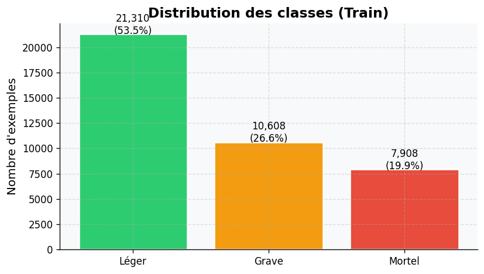
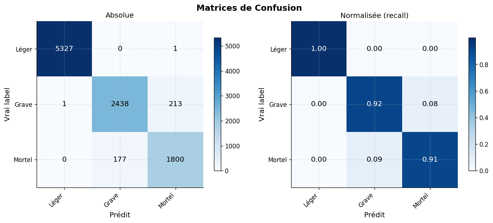
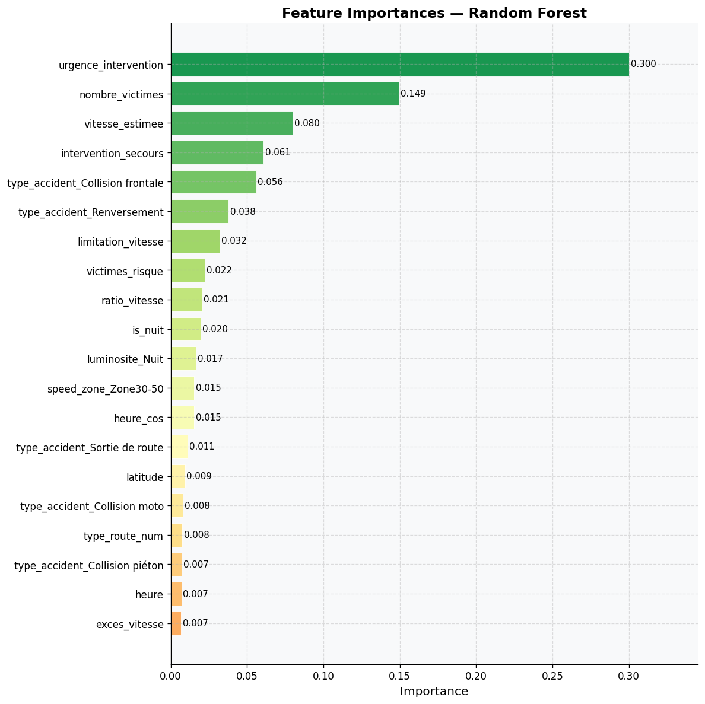
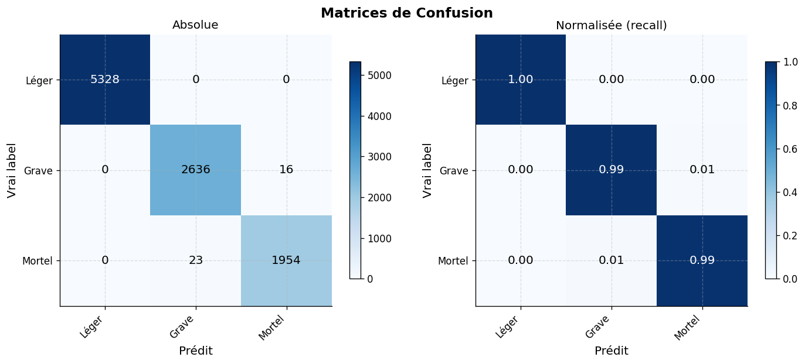
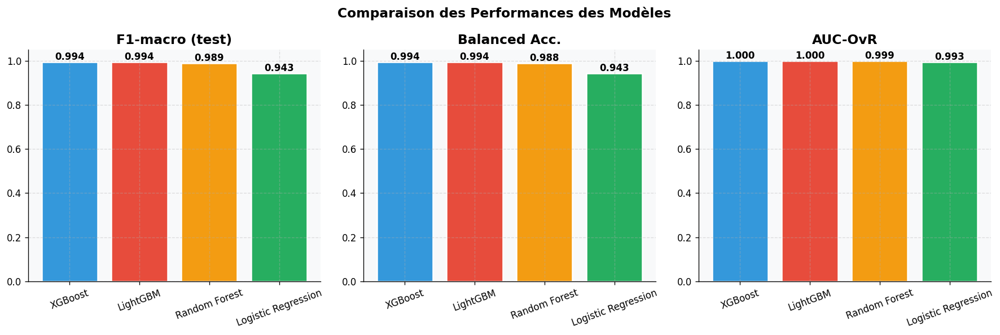
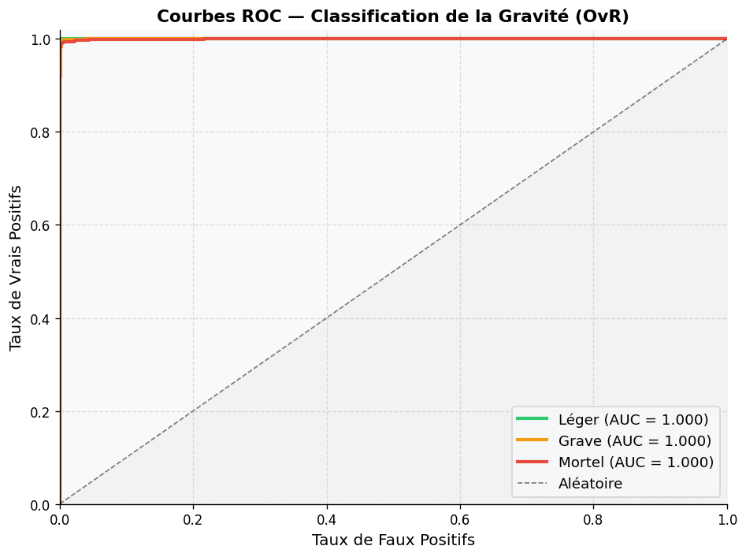
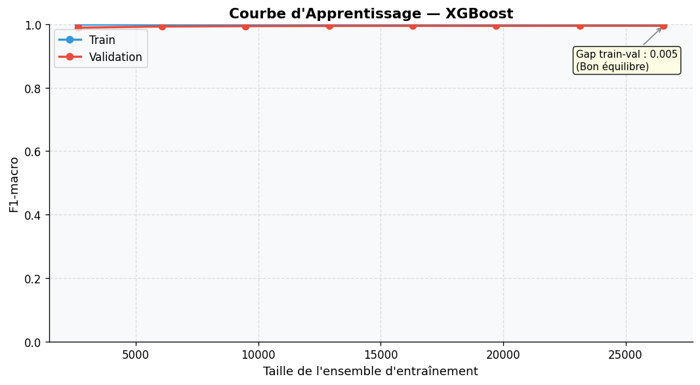

07 — Modélisation Prédictive#
Tâche : Classification multiclasse de la gravité des accidents (Léger / Grave / Mortel)
Modèles : Logistic Regression (baseline) · Random Forest · XGBoost · LightGBM
Pipeline : Feature Engineering → Preprocessing → Tuning Optuna → Calibration → SHAP
import sys
sys.path.insert(0, '../src')
import pandas as pd
import numpy as np
import matplotlib.pyplot as plt
import seaborn as sns
import shap
import warnings
warnings.filterwarnings('ignore')
from pathlib import Path
from sklearn.model_selection import learning_curve
from utils import load_dataframe, GRAVITE_COLORS, PATHS
from feature_engineering import run_feature_engineering
from modeling import (
prepare_data, build_preprocessor, get_feature_lists,
build_logistic_regression, build_random_forest, build_xgboost, build_lightgbm,
evaluate_model, tune_lightgbm, compare_models,
compute_shap_values, get_shap_importance,
run_modeling_pipeline, CLASSES, RANDOM_STATE
)
from visualization import (
plot_confusion_matrix, plot_feature_importance, plot_roc_curves
)
FIGURES = Path('../reports/figures')
FIGURES.mkdir(parents=True, exist_ok=True)
plt.rcParams['figure.dpi'] = 120
print('Modules chargés ✓')
1. Feature Engineering#
# Générer les features depuis les données nettoyées
df_feat = run_feature_engineering(
clean_path=Path('../data/processed/accidents_clean.parquet'),
save_path=Path('../data/processed/accidents_features.parquet')
)
print(f'\nFeatures créées : {df_feat.shape[1]} colonnes, {len(df_feat):,} lignes')
# Aperçu des nouvelles features
new_cols = [c for c in df_feat.columns if c not in [
'accident_id', 'date_accident', 'gravite', 'gravite_num',
'heure', 'jour_semaine', 'semestre', 'region', 'ville',
]]
print(f'Nouvelles features créées : {len(new_cols)}')
df_feat[new_cols[:15]].head(3)
2026-05-21 21:23:54 | INFO | feature_engineering | ════════════════════════════════════════════════════════════
2026-05-21 21:23:54 | INFO | feature_engineering | DÉMARRAGE DU FEATURE ENGINEERING
2026-05-21 21:23:54 | INFO | feature_engineering | ════════════════════════════════════════════════════════════
2026-05-21 21:23:54 | INFO | utils | DataFrame chargé ← ..\data\processed\accidents_clean.parquet (49,783 lignes)
2026-05-21 21:23:54 | INFO | feature_engineering | [1/6] Features temporelles...
2026-05-21 21:23:54 | INFO | feature_engineering | Features temporelles créées ✓
2026-05-21 21:23:54 | INFO | feature_engineering | [2/6] Features comportementales...
2026-05-21 21:23:54 | INFO | feature_engineering | Features comportementales créées ✓
2026-05-21 21:23:54 | INFO | feature_engineering | [3/6] Features environnementales...
2026-05-21 21:23:54 | INFO | feature_engineering | Features environnementales créées ✓
2026-05-21 21:23:54 | INFO | feature_engineering | [4/6] Features d'interaction...
2026-05-21 21:23:54 | INFO | feature_engineering | Features d'interaction créées ✓
2026-05-21 21:23:54 | INFO | feature_engineering | [5/6] Features géographiques...
2026-05-21 21:23:54 | INFO | feature_engineering | Features géographiques créées ✓
2026-05-21 21:23:54 | INFO | feature_engineering | [6/6] Encodage binaire...
2026-05-21 21:23:54 | INFO | feature_engineering |
41 nouvelles features créées.
2026-05-21 21:23:54 | INFO | feature_engineering | Shape finale : (49783, 71)
2026-05-21 21:23:55 | INFO | utils | DataFrame sauvegardé → ..\data\processed\accidents_features.parquet (49,783 lignes)
2026-05-21 21:23:55 | INFO | feature_engineering | ════════════════════════════════════════════════════════════
2026-05-21 21:23:55 | INFO | feature_engineering | FEATURE ENGINEERING TERMINÉ
2026-05-21 21:23:55 | INFO | feature_engineering | ════════════════════════════════════════════════════════════
2026-05-21 21:23:55 | INFO | utils | [Feature Engineering] Temps d'exécution : 1.03s
Features créées : 71 colonnes, 49,783 lignes
Nouvelles features créées : 62
| periode_journaliere | latitude | longitude | axe_routier | type_route | meteo | luminosite | type_vehicule | nombre_vehicules | nombre_victimes | nombre_deces | cause | etat_route | limitation_vitesse | vitesse_estimee | |
|---|---|---|---|---|---|---|---|---|---|---|---|---|---|---|---|
| 0 | Nuit | 7.516622 | 1.138084 | Atakpamé-Sokodé | Nationale | Soleil | Nuit | Bus | 2 | 2.0 | 0 | Alcool | Bon | 90 | 83.0 |
| 1 | Nuit | 6.232614 | 1.581350 | Sokodé-Kara | Autoroute | Soleil | Nuit | Camion | 1 | 1.0 | 0 | Excès de vitesse | Bon | 110 | 73.0 |
| 2 | Soir | 6.128474 | 1.240084 | Sokodé-Kara | Nationale | Soleil | Nuit | Moto | 3 | 2.0 | 2 | Défaillance mécanique | Dégradé | 90 | 83.0 |
2. Préparation Train/Test#
X_train, X_test, y_train, y_test, num_features, cat_features = prepare_data(df_feat)
preprocessor = build_preprocessor(num_features, cat_features)
print(f'X_train : {X_train.shape}')
print(f'X_test : {X_test.shape}')
print(f'\nDistribution y_train :')
for i, cls in enumerate(CLASSES):
n = (y_train == i).sum()
print(f' {cls:<8}: {n:,} ({n/len(y_train)*100:.1f}%)')
# Visualisation du déséquilibre
fig, ax = plt.subplots(figsize=(7, 4))
counts = [( y_train == i).sum() for i in range(3)]
colors = list(GRAVITE_COLORS.values())
bars = ax.bar(CLASSES, counts, color=colors, edgecolor='white', linewidth=1.5)
for bar, n in zip(bars, counts):
ax.text(bar.get_x() + bar.get_width()/2, bar.get_height() + 50,
f'{n:,}\n({n/sum(counts)*100:.1f}%)', ha='center', fontsize=10)
ax.set_title('Distribution des classes (Train)', fontweight='bold')
ax.set_ylabel('Nombre d\'exemples')
plt.tight_layout()
plt.savefig(FIGURES / '07_class_distribution.png', dpi=150, bbox_inches='tight')
plt.show()
2026-05-21 21:23:55 | INFO | modeling | Features numériques : 52
2026-05-21 21:23:55 | INFO | modeling | Features catégorielles : 11
2026-05-21 21:23:56 | INFO | modeling | Train : 39,826 | Test : 9,957
2026-05-21 21:23:56 | INFO | modeling | Distribution y_train : [21310 10608 7908]
2026-05-21 21:23:56 | INFO | modeling | Distribution y_test : [5328 2652 1977]
X_train : (39826, 63)
X_test : (9957, 63)
Distribution y_train :
Léger : 21,310 (53.5%)
Grave : 10,608 (26.6%)
Mortel : 7,908 (19.9%)

3. Baseline — Régression Logistique#
lr_pipe = build_logistic_regression(build_preprocessor(num_features, cat_features))
lr_result = evaluate_model(lr_pipe, X_train, X_test, y_train, y_test, 'Logistic Regression')
fig_cm = plot_confusion_matrix(
lr_result['confusion_matrix'], CLASSES,
FIGURES / '07_cm_logistic.png'
)
plt.show()
2026-05-21 21:23:56 | INFO | modeling |
──────────────────────────────────────────────────
2026-05-21 21:23:56 | INFO | modeling | Évaluation : Logistic Regression
2026-05-21 21:23:56 | INFO | modeling | ──────────────────────────────────────────────────
2026-05-21 21:23:59 | INFO | modeling | F1-macro : 0.9425
2026-05-21 21:23:59 | INFO | modeling | Balanced Accuracy: 0.9432
2026-05-21 21:23:59 | INFO | modeling | AUC-OvR (macro) : 0.9932
2026-05-21 21:23:59 | INFO | modeling |
precision recall f1-score support
Léger 1.00 1.00 1.00 5328
Grave 0.93 0.92 0.93 2652
Mortel 0.89 0.91 0.90 1977
accuracy 0.96 9957
macro avg 0.94 0.94 0.94 9957
weighted avg 0.96 0.96 0.96 9957
2026-05-21 21:24:12 | INFO | modeling | CV F1-macro : 0.9481 ± 0.0032
2026-05-21 21:24:13 | INFO | visualization | Figure sauvegardée : ..\reports\figures\07_cm_logistic.png

4. Random Forest#
rf_pipe = build_random_forest(build_preprocessor(num_features, cat_features))
rf_result = evaluate_model(rf_pipe, X_train, X_test, y_train, y_test, 'Random Forest')
# Feature importance RF
rf_model = rf_pipe.named_steps['clf']
prep = rf_pipe.named_steps['prep']
try:
feat_names = prep.get_feature_names_out()
except:
feat_names = [f'f{i}' for i in range(len(rf_model.feature_importances_))]
importances = pd.Series(rf_model.feature_importances_, index=feat_names)
fig_imp = plot_feature_importance(
importances, top_n=20,
title='Feature Importances — Random Forest',
save_path=FIGURES / '07_feature_importance_rf.png'
)
plt.show()
2026-05-21 21:24:13 | INFO | modeling |
──────────────────────────────────────────────────
2026-05-21 21:24:13 | INFO | modeling | Évaluation : Random Forest
2026-05-21 21:24:13 | INFO | modeling | ──────────────────────────────────────────────────
2026-05-21 21:24:22 | INFO | modeling | F1-macro : 0.9885
2026-05-21 21:24:22 | INFO | modeling | Balanced Accuracy: 0.9883
2026-05-21 21:24:22 | INFO | modeling | AUC-OvR (macro) : 0.9991
2026-05-21 21:24:22 | INFO | modeling |
precision recall f1-score support
Léger 1.00 1.00 1.00 5328
Grave 0.98 0.99 0.99 2652
Mortel 0.98 0.98 0.98 1977
accuracy 0.99 9957
macro avg 0.99 0.99 0.99 9957
weighted avg 0.99 0.99 0.99 9957
2026-05-21 21:24:58 | INFO | modeling | CV F1-macro : 0.9876 ± 0.0023
2026-05-21 21:25:00 | INFO | visualization | Figure sauvegardée : ..\reports\figures\07_feature_importance_rf.png

5. XGBoost#
xgb_pipe = build_xgboost(build_preprocessor(num_features, cat_features))
xgb_result = evaluate_model(xgb_pipe, X_train, X_test, y_train, y_test, 'XGBoost')
fig_cm_xgb = plot_confusion_matrix(
xgb_result['confusion_matrix'], CLASSES,
FIGURES / '07_cm_xgboost.png'
)
plt.show()
2026-05-21 21:25:00 | INFO | modeling |
──────────────────────────────────────────────────
2026-05-21 21:25:00 | INFO | modeling | Évaluation : XGBoost
2026-05-21 21:25:00 | INFO | modeling | ──────────────────────────────────────────────────
2026-05-21 21:25:21 | INFO | modeling | F1-macro : 0.9943
2026-05-21 21:25:21 | INFO | modeling | Balanced Accuracy: 0.9941
2026-05-21 21:25:21 | INFO | modeling | AUC-OvR (macro) : 0.9997
2026-05-21 21:25:21 | INFO | modeling |
precision recall f1-score support
Léger 1.00 1.00 1.00 5328
Grave 0.99 0.99 0.99 2652
Mortel 0.99 0.99 0.99 1977
accuracy 1.00 9957
macro avg 0.99 0.99 0.99 9957
weighted avg 1.00 1.00 1.00 9957
2026-05-21 21:26:15 | INFO | modeling | CV F1-macro : 0.9954 ± 0.0018
2026-05-21 21:26:17 | INFO | visualization | Figure sauvegardée : ..\reports\figures\07_cm_xgboost.png

6. LightGBM#
# Entraînement LightGBM de base (sans tuning pour reproductibilité rapide)
lgbm_pipe = build_lightgbm(build_preprocessor(num_features, cat_features))
lgbm_result = evaluate_model(lgbm_pipe, X_train, X_test, y_train, y_test, 'LightGBM')
fig_cm_lgbm = plot_confusion_matrix(
lgbm_result['confusion_matrix'], CLASSES,
FIGURES / '07_cm_lightgbm.png'
)
plt.show()
2026-05-21 21:26:18 | INFO | modeling |
──────────────────────────────────────────────────
2026-05-21 21:26:18 | INFO | modeling | Évaluation : LightGBM
2026-05-21 21:26:19 | INFO | modeling | ──────────────────────────────────────────────────
2026-05-21 21:26:41 | INFO | modeling | F1-macro : 0.9940
2026-05-21 21:26:41 | INFO | modeling | Balanced Accuracy: 0.9939
2026-05-21 21:26:41 | INFO | modeling | AUC-OvR (macro) : 0.9997
2026-05-21 21:26:41 | INFO | modeling |
precision recall f1-score support
Léger 1.00 1.00 1.00 5328
Grave 0.99 0.99 0.99 2652
Mortel 0.99 0.99 0.99 1977
accuracy 1.00 9957
macro avg 0.99 0.99 0.99 9957
weighted avg 1.00 1.00 1.00 9957
2026-05-21 21:27:23 | INFO | modeling | CV F1-macro : 0.9950 ± 0.0020
2026-05-21 21:27:24 | INFO | visualization | Figure sauvegardée : ..\reports\figures\07_cm_lightgbm.png
# ── Optuna Tuning LightGBM (décommenter pour l'exécuter) ─────────────────
# ATTENTION : prend ~10 min avec 50 trials
# best_lgbm_params = tune_lightgbm(
# X_train, y_train,
# build_preprocessor(num_features, cat_features),
# n_trials=50
# )
# lgbm_tuned = build_lightgbm(build_preprocessor(num_features, cat_features), **best_lgbm_params)
# lgbm_tuned_result = evaluate_model(lgbm_tuned, X_train, X_test, y_train, y_test, 'LightGBM (tuned)')
7. Comparaison des modèles#
all_results = [lr_result, rf_result, xgb_result, lgbm_result]
comparison = compare_models(all_results)
print('═' * 65)
print('COMPARAISON DES MODÈLES')
print('═' * 65)
print(comparison.to_string(index=False))
# Graphique comparatif
metrics = ['F1-macro (test)', 'Balanced Acc.', 'AUC-OvR']
models = comparison['Modèle'].tolist()
fig, axes = plt.subplots(1, 3, figsize=(15, 5))
fig.suptitle('Comparaison des Performances des Modèles', fontsize=14, fontweight='bold')
colors = ['#3498db', '#e74c3c', '#f39c12', '#27ae60']
for ax, metric in zip(axes, metrics):
values = [float(comparison[comparison['Modèle']==m][metric].values[0].split('±')[0]) for m in models]
bars = ax.bar(models, values, color=colors, edgecolor='white', linewidth=1.5)
ax.set_ylim(0, 1.05)
ax.set_title(metric, fontweight='bold')
ax.tick_params(axis='x', rotation=20)
for bar, v in zip(bars, values):
ax.text(bar.get_x() + bar.get_width()/2, v + 0.01, f'{v:.3f}', ha='center', fontsize=10, fontweight='bold')
plt.tight_layout()
plt.savefig(FIGURES / '07_models_comparison.png', dpi=150, bbox_inches='tight')
plt.show()
═════════════════════════════════════════════════════════════════
COMPARAISON DES MODÈLES
═════════════════════════════════════════════════════════════════
Modèle F1-macro (test) Balanced Acc. AUC-OvR CV F1 (mean±std)
XGBoost 0.9943 0.9941 0.9997 0.9954 ± 0.0018
LightGBM 0.9940 0.9939 0.9997 0.9950 ± 0.0020
Random Forest 0.9885 0.9883 0.9991 0.9876 ± 0.0023
Logistic Regression 0.9425 0.9432 0.9932 0.9481 ± 0.0032

8. Courbes ROC#
# Courbes ROC du meilleur modèle (LightGBM)
best_result = max(all_results, key=lambda r: r['f1_macro'])
print(f'Meilleur modèle : {best_result["model_name"]} (F1={best_result["f1_macro"]:.4f})')
fig_roc = plot_roc_curves(
best_result['roc_data'],
FIGURES / f'07_roc_{best_result["model_name"].replace(" ", "_").lower()}.png'
)
plt.show()
Meilleur modèle : XGBoost (F1=0.9943)
2026-05-21 21:27:29 | INFO | visualization | Figure sauvegardée : ..\reports\figures\07_roc_xgboost.png

9. Courbes d’apprentissage#
from sklearn.model_selection import learning_curve
from sklearn.model_selection import StratifiedKFold
# Courbe d'apprentissage du meilleur modèle
train_sizes, train_scores, val_scores = learning_curve(
best_result['pipeline'], X_train, y_train,
train_sizes=np.linspace(0.1, 1.0, 8),
cv=StratifiedKFold(n_splits=3, shuffle=True, random_state=RANDOM_STATE),
scoring='f1_macro',
n_jobs=-1
)
train_mean = train_scores.mean(axis=1)
train_std = train_scores.std(axis=1)
val_mean = val_scores.mean(axis=1)
val_std = val_scores.std(axis=1)
fig, ax = plt.subplots(figsize=(9, 5))
ax.plot(train_sizes, train_mean, 'o-', color='#3498db', linewidth=2, label='Train')
ax.fill_between(train_sizes, train_mean - train_std, train_mean + train_std, alpha=0.15, color='#3498db')
ax.plot(train_sizes, val_mean, 'o-', color='#e74c3c', linewidth=2, label='Validation')
ax.fill_between(train_sizes, val_mean - val_std, val_mean + val_std, alpha=0.15, color='#e74c3c')
ax.set_xlabel("Taille de l'ensemble d'entraînement", fontsize=11)
ax.set_ylabel('F1-macro', fontsize=11)
ax.set_title(f'Courbe d\'Apprentissage — {best_result["model_name"]}', fontsize=13, fontweight='bold')
ax.legend(fontsize=10)
ax.set_ylim(0, 1)
ax.grid(True, alpha=0.4)
# Annotation biais/variance
gap = train_mean[-1] - val_mean[-1]
ax.annotate(f'Gap train-val : {gap:.3f}\n({"Overfitting" if gap > 0.1 else "Bon équilibre"})',
xy=(train_sizes[-1], val_mean[-1]), xytext=(-80, -40),
textcoords='offset points', fontsize=9,
arrowprops=dict(arrowstyle='->', color='gray'),
bbox=dict(boxstyle='round,pad=0.3', fc='lightyellow', alpha=0.8))
plt.tight_layout()
plt.savefig(FIGURES / '07_learning_curve.png', dpi=150, bbox_inches='tight')
plt.show()
